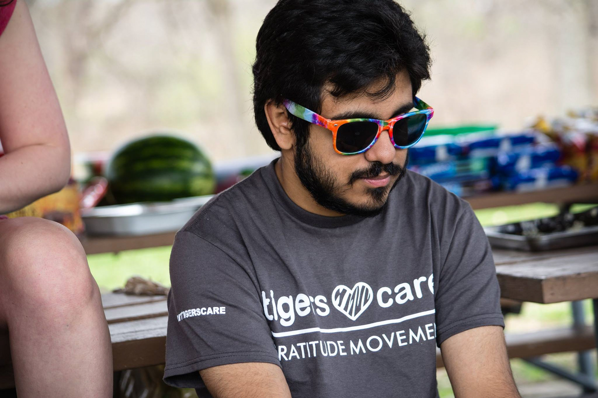

Howdy I'm Rahul Shah.
I'm a UX Researcher
& Designer
UX Intern at Rochester Regional Health
B.S. Human-Centered Computing @ Rochester Institute of Technology
Work
Including Users in the Process:
reworking logistics management
Emergency UX Design:
a response to COVID-19
Affordance & User Freedom:
UX of mystery, ciphers, codes, and clues
About Me
What I love about UX is the ability to solve problems and help people. I am all about listening to users and coming up with solutions, and I love thinking outside-the box. My favorite parts of the UX design process are user interviews, usability testing, and wireframing because I love working on usability and aspects of layout, flow, and ease of use. I might not be as tech savvy as a developer, or as aesthetic as a graphic designer, but I fill an important niche that bridges the gap between users and products. I work best in dyamic groups jumping from one project to the next, always on my toes ready to take on new challenges.
I’m currently pursuing two minors on top of my degree: Psychology and American Sign Language. I’m concentrating in Instructional Technology and Museum Exhibit Design. I’m President of the User Experience Club at RIT. I love baking, 3D modeling, canoeing, and I’m a musician.
My puns are un-bear-able.
let's chat
copyright Rahul Shah 2020